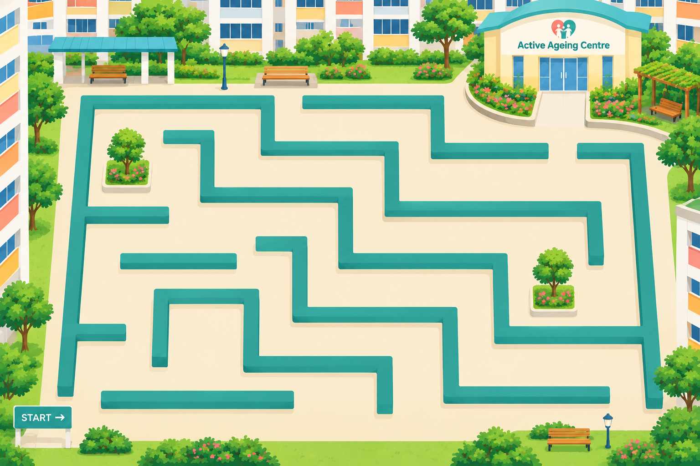

A care coordination journey
Caring for Mdm Wee
You are a Care Coordinator. Today, you'll help Mdm Wee on her journey from hospital back to her community.
About 8–10 minutes
{{ maze.goalText }}
{{ maze.winText }}
Maze bonus: {{ mazeBonus }} points
The blobs caught up with you. You can try the maze again or carry on with Mdm Wee's story.
{{ scene.text }}
{{ quiz.fb.lead }}
{{ quiz.fb.text }}
Thanks to your thoughtful care plan, Mdm Wee has not experienced any further falls, has reclaimed her passion for gardening, and has found a vibrant community connection. She also seems more cheerful.
By addressing the key social determinants of health — Mdm Wee's social isolation, home environment, and community engagement — through coordinated social prescribing, sustained improvements in her overall wellbeing were achieved.
Quiz points: 10 for each answer option judged correctly. Maze bonus: dots, cherries and reaching the exit.